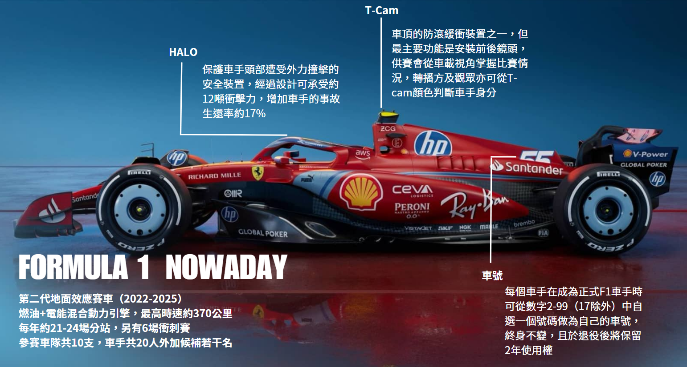
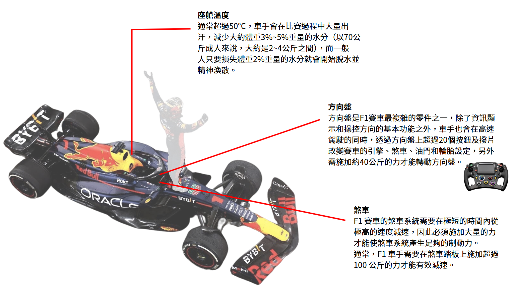
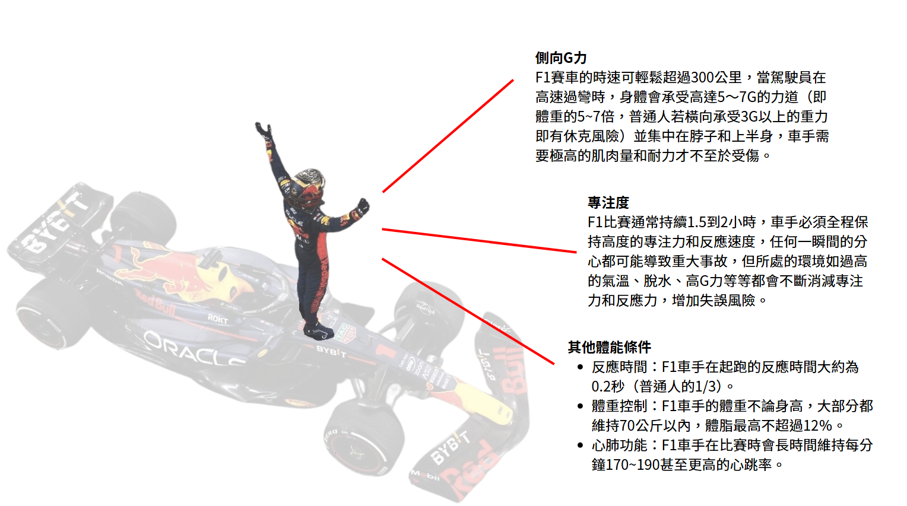
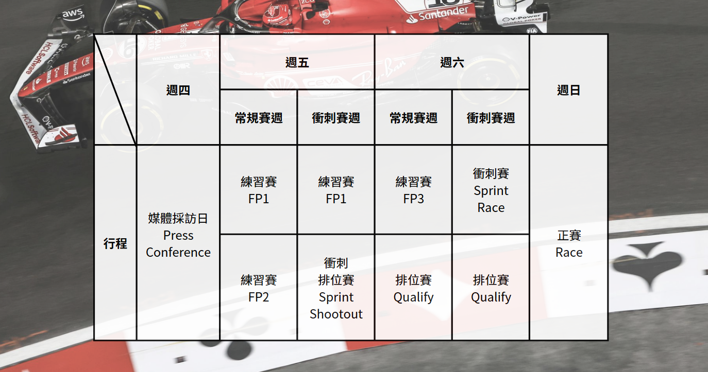
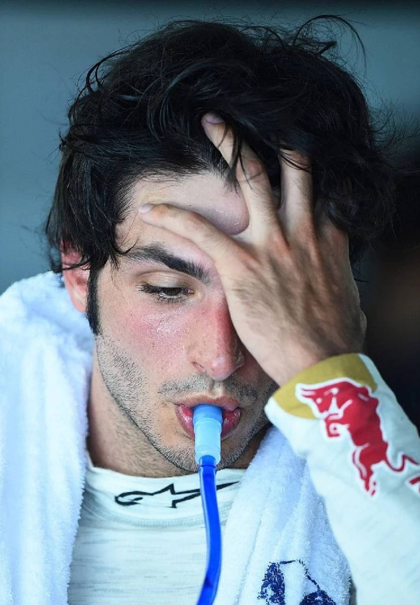
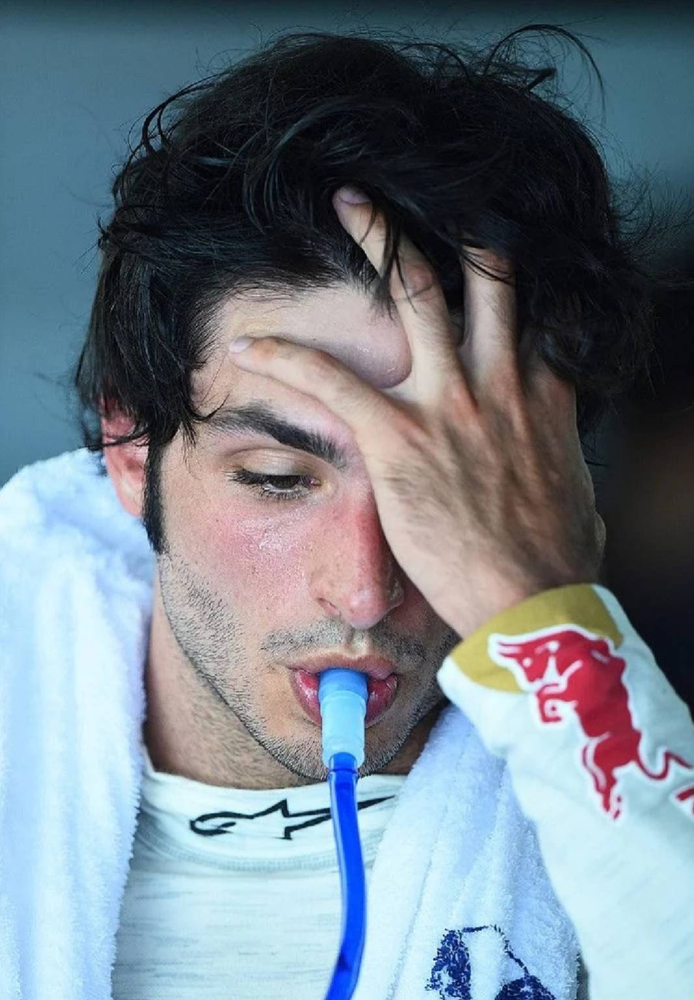

車隊全名：Oracle Red Bull Racing
總部：Milton Keynes, United Kingdom
車隊冠軍：6
分站勝利：122
桿位：103
最快圈：99
F1（Formula One）是世界最高等級的單座開輪式賽車比賽，由國際汽車聯盟（FIA）主辦。
每年舉辦的F1世界錦標賽（FIA Formula One World Championship）吸引全球頂尖車隊與車手參加，包括紅牛、法拉利與梅賽德斯等知名隊伍。
比賽在全球各地的賽道舉行，如摩納哥、英國銀石、義大利蒙札等經典賽道。F1結合尖端科技、戰略與車手技術，被譽為「速度與科技的極致競技」。
賽季包含多站比賽，積分累計決定車手與車隊冠軍，是全球觀眾最多的運動之一。
車子
車子多難開？
車手多難當？
比賽週行程
賽程(2025)
澳洲(3/16)，中國(3/23)，日本(4/6)，巴林(4/13)，沙烏地阿拉伯(4/21)，邁阿密(5/5)，艾米利亞羅馬涅(5/18)，摩納哥(5/25)，西班牙(6/1)，加拿大(6/16)，奧地利(6/29)，英國(7/6)
比利時(7/27)，匈牙利(8/3)，荷蘭(8/31)，義大利(9/7)，亞塞拜然(9/21)，新加坡(10/5)，美國(10/20)，墨西哥(10/27)，巴西(11/10)，拉斯維加斯(11/23)，卡達(12/1)，阿不達比(12/7)
車隊全名：Oracle Red Bull Racing
總部：Milton Keynes, United Kingdom
車隊冠軍：6
分站勝利：122
桿位：103
最快圈：99
2005年收購捷豹車隊加入F1後，於2010-2013年創下車隊、車手四連冠的紅牛王朝，隨後坐穩了老三地位直至2021年Max奪下車手冠軍為止。
因為有著極具規模的青訓體系及二隊，建立起了以一號車手為核心的競爭策略，並以對二號車手鐵面無情且缺乏耐心的毀譽參半風格聞名。
2022-2023年都以絕對的優勢拿下車隊總冠軍寶座，尤其2023的的RB19以22場競賽中贏下21勝的戰績，成為F1史上最具統治力的賽車。
2024年起陷入內鬥與醜聞，逼走包括空氣動力學傳奇Newey在內等不少元老級人物，加上賽車競爭力大降，最終以季軍作收。
21~24賽季四冠王。體育漫畫中的反派，能駕馭非常難開的車，
常造成隊友陷入自我懷疑，也會因為能力太強掩蓋了賽車缺陷，
反而造成賽車越研發越糟的困境。
賽車風格激進、技術流，把車開出王霸之氣。
優勢明顯時脾氣都很好，但一旦受到挑戰就會進入Mad模式開噴，
最近也因此被FIA盯上吃了髒話罰單。
在媒體面前總是有尖銳幽默感的一面，貢獻了不少經典名言；
雖然是反派，但很多車手都對他的性格大加讚賞。
喜歡開模擬器、FIFA、地圖、小孩跟貓，對對女友的女兒很好，
2025年也將迎接第一個孩子出生。
來自日本育成體系的車手，對起跑和煞車時機的掌控技巧出色，
駕駛風格兇悍，常出現全贏或全輸的孤注一擲。
賽道下是幽默、和藹可親的吃貨，在各陣營車手間都有好人緣，
但上車後會性情大變，展現出人比車更兇的拼命性格，反差極大。
在進入F1後的第5年於第3場比賽起代替Liam Lawson，
成功晉升至紅牛車隊，
卻遇上近10年來賽車競爭力最差的時刻，
儘速適應賽車操駕並展現能力成為當務之急。
車隊全名：Mercedes-AMG PETRONAS F1 Team
總部：Brackley, United Kingdom
車隊冠軍：8
分站勝利：119
桿位：131
最快圈：100
2010回歸賽車運動後，在2014至2021賽季間拿下七次車手世界冠軍和八次車隊世界冠軍，F1場上的（前）絕對霸主。
2021爭冠大戲後，2022年起因為過於激進的設計理念而爭扎於亞、季軍之位且競爭力逐年下滑，
直到2024年中又異軍突起，在歐洲賽道中成為分站勝利的強勢競爭者。
曾在2016賽季經歷隊內兩位車手互相廝殺至最後一站的慘痛經驗，
稱霸時期會透過各種策略、指令等方式貫徹嚴格的一二號車手政策，並以合約確保二號車手的穩定性，管理風格具有賽車傳統的紳士與殘酷特質。
早期以開著慢車拿出優異表現及穩定的風格備受讚賞；
如今卻以會在最後一圈發生失誤丟掉勝利，
或是取得勝利後被DSQ等怪形象被粉絲記住；
喜歡講一些沒人聽得懂的老派俗語，迷因數量快速累積中。
2025年將面對兢爭力不如過去的賽車、轉投他隊的前隊友，
以及對車隊核心位置虎視眈眈的後輩，可謂腹背受敵。
在在賓士青訓的安排下跳過了F3的天才，
雖然在F2中並沒有拿出如往常驚豔的結果且在攻防中尚為青澀，
但快速適應比賽並展現出競爭力，僅半年便宣布加入賓士車隊；
由於過往幾乎沒有新人首季就進入上游車隊，
所以2025賽季能拿出什麼樣的表現備受注目。
身為義大利人，中間名又和前法拉利世界冠軍Raikkonen同名，
本人也希望被叫做Kimi，合理懷疑是個有法拉利情節的孩子。
車隊全名：Scuderia Ferrari HP
總部：Maranello, Italy
車隊冠軍：16
分站勝利：249
桿位：253
最快圈：263
從F1創始之初就參加比賽至近的豪門車隊，已經成為賽車運動的代名詞，以致每年就算一分未得也會有參賽獎金約7500萬歐元，堪稱F1的活招牌。
義大利語中的粉絲「tifosi」一詞也專指法拉利車隊粉絲。
由於車隊組織文化之故，長年處於內鬥狀態，導致稀爛策略、混亂政治及脫線的技師組已成為日常，
再加上倒楣的車手與造成反效果或無感的升級，形成車隊－車手－賽車的（不可能）爭冠三角。
不知道為什麼近年旗下車手的顏值似乎總是圍場頂標，被戲稱把顏值當成篩選車手的指標之一。
以史上最快晉升速度被法拉利簽下罕見五年長約的紅軍少主。
賽車生涯充滿死亡的陰影，
帶著父親、教父、摯友的遺願在爭奪世界冠軍的路上努力中。
技術高超、好勝心強，
風格上總是把賽車推向極限中的極限，攻擊性十足。
近年憑藉著和帥氣長相同等難忘的倒楣運氣在非車迷中引起關注。
2025年將生涯第二次迎來世界冠軍級的隊友，
兩人在賽道上會產生什麼樣的火花，
又會如何爭取隊內主導地位，成為全世界關注焦點。
七屆車手世界冠軍（2008、2014~2015、2017~2020），
F1史上唯一一位非裔車手，現役中當之無愧的第一人。
新秀賽季拿下年度亞軍、隔年加冕世界冠軍，駕駛風格優雅凌厲，
但很愛在無線電裡各種抱怨，形成反差。
2024年2月宣布加盟法拉利的新聞堪稱史詩級轉隊。
素食主義者，也是場上少數致力於環境、平權等議題倡議的車手；
在時尚圈、足球圈、美式足球圈、演藝圈、音樂圈都有涉略，
同時也是電影《F1》的製片。
車隊全名：McLaren Formula 1 Team
總部：Woking, United Kingdom
車隊冠軍：9
分站勝利：189
桿位：164
最快圈：172
和法拉利、威廉斯並列為F1歷史成立最悠久的三大隊，但近20年表現平庸，在2010年後更是徹底淪為中下游車隊並陷入嚴重財政危機。
為了解決資金問題而開始瘋狂參加不同賽事、瘋狂找合作夥伴、瘋狂推出各種贊助大禮包方案、瘋狂大拍賣家產等方式延續車隊生命。
2023年初拿出了黑歷史等級的慢車，但在季中升級後一躍成為頒獎台常客，2024年更是後起直追，斬斷紅牛車隊的衛冕之路，時隔26年重回車隊冠軍的寶座。
擁有兩位被稱為新世代最冠軍相的車手，2025年將向車隊、車手雙冠軍發起挑戰。
嬌生慣養的小少爺，個性有點跋扈、講話不經大腦讓車隊很困擾，
但對欣賞的對象也會大方讚賞。
麥拉倫親手養大的太子，賽車天才，
駕駛風格又瘋又莽但血性十足非常好看，
可惜因為車太爛從2019年出道到2024年才終於拿到首勝，
從Lando No-win變成Lando Now-win。
和隊友某個角度長得很像，
所以留起（其實並不太適合的）小鬍子以示區隔，
被粉絲合稱麥拉倫雙子星。
和隊友一樣是個全方位賽車天才，
師從前紅牛車手/現經紀人Mark Webber，
駕駛風格乾淨利落，強勢但不冒進，在國內外車迷中快速圈粉，
預計本年將正式加入競爭世界冠軍行列。
和隊友某個角度長得很像，粉絲暱稱麥隊雙子星，
年紀比較小但個性冷靜卻很幽默，
雖然也會緊張和興奮但不太會表現出來，
比較像雙子星中的兄長（雖然也有可能是因為Lando太幼稚）。

車隊全名：Aston Martin Aramco F1 Team
總部：Silverstone, United Kingdom
車隊冠軍：0
分站勝利：1
桿位：1
最快圈：3
前身是老牌的中游車隊，因為車隊老闆破產落跑而被新東家買下，自從新老闆加入後大力投資和挖角人才，終於在2023賽季初突然表現極度變得亮眼。
多次站上頒獎台，但和擅長季中升級的麥拉倫相反，總是在升級後反而遭遇瓶頸，該賽季也因此被麥拉倫後來居上在積分榜上超越。
2024年延續前一賽季後半年的疲態，但仍然能堅守住積分圈，整體表現應該算是上游集團的吊車尾（說「應該」是因為他們真的沒什麼存在感），
但透過誠意和支票的力量打動傳奇設計師加入，展現了現任老闆的決心和財力。
早期靠爸爸贊助而從跳級進入F1，
後來他爸直接買下當時將破產的中游車隊，
再把百年跑車品牌買下來了為車隊冠名......
對，董事長就是他爸。是真·太子。
本人個性滿好的，據説相當幽默，
但因為太容易被針對而變得低調；
並非沒有實力， 事實上算是滿會跑雨戰的
（2024賽季巴西站後決定將這點列入待觀察之列），
但因為鈔能力和忽高忽低、神鬼難辨的表現，廣泛為車迷所不喜。
05-06賽季雙冠王，現在是車隊的太子太傅。
技術高超外也是戰術流代表，即使已43歲仍然強得很恐怖，
2025年更將與徒弟Botoleto同場競技，
狀態好得讓人不知道什麼時候或是否真有退休的一天。
個性老奸巨猾，是F1中的陰謀論中心。
總是在經歴和車隊鬧翻
——跳槽——
新車隊因為內鬥或醜聞等原因失去優勢後和車隊鬧翻的循環；
但因為實力堅強，就算鬧翻也能在數年後和老東家一笑泯恩仇⋯⋯
然後再次鬧翻，被戲稱是選隊鬼才。

車隊全名：BWT Alpine F1 Team
總部：Enstone, United Kingdom
車隊冠軍：2
分站勝利：21
桿位：20
最快圈：15
2023賽季以華麗的國家隊陣容出賽，結果落一個不上不下的地位；
2024賽季初慢得讓人髮指，本以為無望中游，又在季末憑藉巴西站的雙頒獎台漂亮翻盤，忙了一年最後還是在同樣的排名結束賽季，
可能連他們自己都搞不清楚發生了什麼事。
經歷兩年的人事地震，技術人員、高層、領隊和車手紛紛跳船（也有被開除丟下船的）後迎來頗具爭議的顧問，沒多久就宣佈將放棄廠隊優勢並開始介入車手陣容。
總之如果覺得他們的比賽不好看，可以翻翻車隊新聞，會得到意外的樂趣。
駕駛風格極具侵略性和攻擊性，職業生涯多舛，
被廣泛認為缺少機運，是紅牛青訓體系的受害者之一。
2024賽季全年0維修費創下歷史紀錄，
足見其實力堅強及（過去較少被提及）優異的穩定性。
圍場少見的E人，但偶包很重。
曾經表演同時用四隻手機滑IG點讚的社群小王子，
在社群上、媒體前都以開朗張揚的形象示人，
女粉絲數量眾多；2025年初以平頭造型在車迷之間投下震撼彈。
前Moto GP世界冠軍之子，
2024賽季最後一場比賽代替被提早解約的Esteban Ocon出道，
但據傳新合約只簽了6場比賽；
在Alpine如今的態勢下，新賽季只有5場比賽能證明自己，
對新人而言無疑是最殘酷的開局。
高大、性格靦腆，但也有在比賽爭勝關頭拒絕車隊指令的前科，
希望新賽季能有更多展現強硬態度的機會。
車隊全名：Williams Racing
總部：Grove, United Kingdom
車隊冠軍：9
分站勝利：114
桿位：128
最快圈：133
曾經和法拉利、麥拉倫齊名的三大車隊，然而和前兩者不同，2020年以前都是以私人獨立車隊方式運作，
在F1現代化過程中發展越發艱辛，完全無法拿出表現而長年墊底，直到被美國資本收購後才開始有資金注入。
2023賽季在新領隊帶領下終於成功翻身為中下游領頭羊，雖然2024賽季因為各種原因而延後升級計畫，回到熟悉的倒數名次，但種種跡象都顯示他們正掃去過去的陰霾，積極為未來籌畫。
傳奇車手Carlos Sainz, Sr.之子，
大眼睛看起來笨笨的，其實是官方認證的策略大師，
屬於靠頭腦開車的類型。
2024賽季初就確認將離開法拉利，但直至7月才宣佈加盟威廉斯，
因為能力和經驗都很強大，
各陣營都不願意放過有可能簽下這位車手的機會，
讓車手市場面臨整整五個月的談判僵局。
缺乏personal space概念，喜歡用肢體語言表達親暱，
被稱為圍場中的愛情騙子，
一不小心就會被他迷得深魂顛倒，連車隊領隊也無法倖免。
狗派，會抱著狗狗一邊看電影一邊哭。
升上F1前的成績很亮眼，但進入後成為紅牛青訓受害者之一，
一度失去席位；目前在威廉斯成為帶領老破小車隊的重要力量。
屬於紅牛出身的車手中駕駛風格比較不紅牛的，但攻守能力皆佳，
且受限於賽車競爭力低落緣故，時常踩在極限與失控的邊界，
也因此在修車排行榜上總是高居不下。
圍場傳聞紅牛多次想找他回鍋但被拒絕了；
本人好個性佳又帥氣，不吝於給予後輩建議和支持，
學弟角田和Lawson都受過其指指導，是圍場人氣王之一。
車隊全名：Stake F1 Team Kick Sauber
總部：Hinwil, Switzerland
車隊冠軍：0
分站勝利：1
桿位：1
最快圈：7
本體是瑞士籍老牌車隊Sauber車隊，曾經是許多知名車手出道的重要車隊，但如今除了即將變成Audi車隊和上任的新技術長大家很熟悉/痛恨之外沒什麼記憶點的隊伍，
2024賽季初貢獻很精彩的換胎慘劇（而且不只一次），但改善後就徹底失去存在感，因為即將換新東家的關係目前有點全員擺爛中。
賽車技術堅強，巔峰時期一度有機會加入法拉利等上游車隊，
少數沒有贊助商支持和賽車背景，
完全靠實力生存下來的「真‧職業車手」。
F1「出賽次數最多，卻從未站上過頒獎台」，
悲慘紀錄的保持人，且在這些未上過頒獎台的人之中，
也是生涯累積積分最高者，至今毎次出賽都在刷新紀錄，
也被評價為可能是闈場中最會跑排位賽的車手之一。
因為脾氣很差被說像綠巨人浩克，
但在女兒出生後收斂不少，變成傻爸爸。

在2024年的F2系列賽中低調地後起直追，
最終成為繼Charles Leclerc、
George Russell及Oscar Piastri後，
以第四位以新人身分拿下F3、F2雙冠並直升進入F1的車手。
師從Fernando Alonso，
2025賽季車迷們將看到師徒兩人同場競賽的場面，
同時他也是Max Verstappen虛擬賽車隊的成員，
可見其實力備受幾位前輩認可。
車隊全名：MoneyGram Haas F1 Team
總部：Kannapolis, United States
車隊冠軍：0
分站勝利：0
桿位：1
最快圈：2
又小又窮的可憐車隊之一，據說Mercedes車隊隨便一天請假的員工人數都比哈斯全體員工數量還多，因為每年都很掙扎+前領隊很有人格魅力的關係，成為Netflix紀錄片的主角之一。
為了省錢到處買零件回來拼裝，跟引擎供應商法拉利的關係頗深，甚至搬到人家辦公大樓內成立設計部門。
2024賽季在新領隊帶領下成績大有起色並跟豐田簽訂技術合作協議，但究竟是不是曇花一現還有待觀察。

開車風格強硬且有著強大的防守能力，
但因多次對隊友展現防守技術的紀錄而不太受國內外網友歡迎。
偶爾會微笑著拋出驚人之語或做出驚人之舉，
例如曾經在身體不適的狀況下比賽中途嘔吐，
但卻把嘔吐物硬吞回去，隱瞞下來，
事後說因為他寧願死掉也不想退賽。
成為職業賽車的經歷坎坷，養成了對媒體相對保守的作風，
不喜歡為自己行為和爭議解釋，本人個性非常內斂溫暖，
超級寵粉，私下是超級英雄、電玩和遙控車宅宅。

來自法拉利青訓，
2024賽季分別代替Carlos Sainz及Kevin Magnessen出戰
沙烏地阿拉伯、亞塞拜然及巴西三場比賽，
在競爭力全然不同的車輛中都能安全帶回並拿下分數，
因此在F2成績並沒有特別亮眼的情況下仍成功簽約Haas車隊；
而三條賽道特性與比賽情勢也完全不同，
也顯示了他扎實的綜合實力與天賦。
身為法拉利重點培養的車手，
被廣泛認為可能是繼Charles Leclerc後，
下一個會坐在法拉利中哭泣的人。
車隊全名：Visa Cash App Racing Bulls Formula One Team
總部：Faenza, Italy
車隊冠軍：0
分站勝利：2
桿位：1
最快圈：3
紅牛二隊，車迷暱稱為小牛，是為了培養未來紅牛車手而存在的車隊。
兩位車手互相競爭，勝出者即會被優先提拔到紅牛車隊，被視為青訓的延續，造成紅牛體系車手都很容易陷入隊内競爭的特色，車手陣容變動速度也是最快的。
受限於規則不能直接照搬紅牛的設計，但又時不時要抄紅牛的作業（實際上是在幫忙收集資料），因此競爭力及升級結果總是難以預測。
車輛性能不可靠，場上策略表現更是更叫人不敢期待，唯一值得肯定的應該是賽車塗裝很帥，沒了。

2024賽季於美國大獎賽起代替Daniel Ricciardo出賽，
擁有絕佳的適應力及以新人而言不錯的反應和攻擊性，
但排位賽0:6輸給隊友且僅1場比賽獲得積分，
使紅牛於季末提拔他的決定掀起熱議；2
025賽季僅過了2場比賽，
便因完全無法適應失去競爭力的賽車而被下放回二隊，
創下隊史最快晉升（12場）及最快下放（2場）的紀錄。
回二隊後外表與精神肉眼可見地明朗許多，希望能盡快找回速度。
據合作過的車隊工作人員表示其個性和螢幕上展現的完全相反，
私下是好相處也有禮貌的人。

2024賽季的F2年度亞軍，此為他第二年參加F2賽事，
也是職業生涯中最佳成績。
賽車風格沿襲紅牛青訓一貫特色，充滿攻擊性，
不管是駕駛方式還是TR都和早期的角田很相似。
值得期待之餘，也讓人忍不住希望他能快速成長，
否則在如今政治氛圍濃厚的紅牛體系中，
很有可能成為繼Lawson之後的下一個犧牲者。
是個喜歡空手道和日漫的宅宅，個性超級電波，
會突然作出或說出讓人摸不著頭緒的行為與發言
（如合照時突然伸手抓前面人的頭皮，或自我介紹12歲）。
綽號是Chili🌶️，全場最帥（我覺得啦）。西班牙人，但近年來不知道為什麼長得越來越像印度人。
超級大好人，跟每個人都相處的很好（但最喜歡的是Lando，感情超好還會一起打高爾夫，粉絲都叫他們Carlando，他們最自己也很愛），
喜歡跟人貼貼和肢體接觸，到處散發美魅力，粉絲都說他是西班牙愛情騙子。
而且很ㄎㄧㄤ，有時候後接受採訪會當機，露出很呆的表情，很像阿公在發呆。
但不要看他大眼睛感覺笨笨的，其實他是策略大師。
眾所週知Ferrari的策略組就是一群小丑，因此讓不少Tifosi在每場比賽不是期盼著賽車不要出狀況，就是祈禱策略組不要再搞事。
而2023年新加坡站，Carlos自己當起策略組。
他於比賽的最後階段防守第二名Lando Norris的同時，也巧妙運用比賽中的DRS系統讓Lando能夠適當的提升速度，防止被處於3、4名的賓士雙車超越，
如此在場上的機策略，不只成功地拿下第一名，也讓車隊上下和粉絲見識到他在賽場上的智慧與臨場反應。
還有雖然平常可可愛愛的但是在有關比賽的事情上很剛硬。
在2024年在巴林站後身體感到不適，一直發高燒和腹瀉，為了週五的自由練習，他採取所有措施環節症狀。
最終他參加了自由練習但情況還是不樂觀，後來他去了醫院被告知是闌尾炎，他為了比賽詢問能不能推遲手術，醫生說如果闌尾破裂他很可能會死後，他才願意做手術。
然後下一秒就問手術完兩週後他能不能參加下一場比賽，滿腦子只有比賽。
有趣的是2025年他的隊友也得過闌尾炎，所以他們很剛好的兩個都沒有闌尾的組成一隊www
小故事：Smooth Operator
說起這首歌與Sianz的淵源，還得回到2019年英國大獎賽的那個周末，這首歌一直時不時的在賽場裡播放著，當時的Sianz對這首歌並沒有太多想法，僅僅覺得「就是一首很紅的歌。」
殊不知可能是因為太過洗腦，在當年的匈牙利大獎賽拿下第五名後，Sianz便脫口而出在 Team Radio 上唱了起來，隨後在拿下第三名的巴西大獎賽也是如此。
漸漸的Sianz就被冠上了Smooth Operator的稱號 (哪怕當時他完全不懂這是什麼意思)，不過現在在場上不少機智的「操作」，還有愛當愛情騙子的情況下，也算是名符其實了。
美貌欣賞時間❤️（都快把我釣成翹嘴了）
 

來自義大利的小孩，他才18欸！
我原本以為Bearman（20）已經夠年輕了，結果跳出一個18的。人家18的都出來開F1，我20連汽車駕照都沒有QQ。
但因為我只看F1沒有看其他級別，他又是今年才加入的所以對他不是很熟，所以只能講少少東西。
他很可愛，之前在採訪的時候媽媽突然打電話過來，然後跟媽媽解釋自己還在採訪，超好笑。
有個漂亮的女友，兩個人貼貼的時候都很可愛（最喜歡看好看的人類談戀愛了😍😍）
在F2時跟Bearman🐻的採訪也很有趣。
Q：你會怎麼形容你的隊友？🐻：他很漂亮
Q：隊友的最佳優點是什麼？🐻：我覺得是嘴唇
Q：誰花最多時間通電話以及回訊息時間最長？🐻：我沒回那些未讀訊息但Kimi的訊息我會馬上回覆
Q：想跟對方說但還沒說的事？🐻：我想要你的生日邀請函
根本是是戀綜會有的回答，兩個人感情一定很好🥰。
而且意外是個霸道總裁的類型（？）
因為今年義大利大獎賽跟他的校外教學撞期（對，他還在讀書），但他因為不想錯過這次與同學相處的機會就直接霸氣開口：「那就把全班邀來 F1 現場吧。」
地點剛好舉辦在 Kimi 家鄉 Bologna 附近的 Imola 賽道 Mercedes 就幫他安排一次地表最狂校外教學，讓 25 位同班同學跟老師全員到場，親眼見識 Kimi 平常在做什麼事。
Kimi 甚至還親自導覽、介紹賽細節、分享幕後日常讓大家體驗 F1 賽車手的一天 。
雖然 Kimi 已是 F1 的賽車手但他還是有在唸書，為了能夠平衡他事業與學業，Kimi 甚至在飛機上讀書還請學校寄筆記來背。
有趣的是數學是他最痛苦的必修， Kimi 則開完笑說：「如果我有一天在飛機上遇到 George Russell 我可能會拜託他教我數學。」
不少人在看到 Kimi 邀請班上同學到 F1 現場當做校外教學時，也都留言表示羨慕（例如我）。
但結果車子引擎壞掉DNF，太可憐了www
悲情男主角，在比賽期間爸爸過世化悲憤為力量勇奪杆位，朋友在比賽中不幸身亡後發誓要幫他完成心願，是個苦命的寶寶🥲
再加上一直被自己人搞，成為坐在法拉利裡哭泣的男人，是兒法夢受害者。（雖然這張圖發生的事跟團隊沒關係，但就是經典）
有點笨，這是本人自己承認過的www
在2019年的阿塞拜疆巴庫城堡彎，F1最陰間的彎角之一，當時大家對法拉利期待極高，甚至認為有機會挑落奔馳。
在可以穩穩進入第三節排位賽的情況下，勒克萊爾在Q2沖太猛，撞墻退賽，無法參加Q3。（造就名場面：I'm stupid）
而且最擅長的運動好像只有F1，玩其他運動時看起來都超笨的超好笑。
除了專業F1賽車手身份，他也常在代言的時尚品牌廣告中亮相，就連不追F1的人也都對他印象深刻。
私底下夏爾還是個喜歡音樂創作的人（會彈鋼琴），每場比賽都是他的靈感來源，個人也公開發表過幾首音樂作品，如此的才華洋溢很難不愛吧！。
重點是帥到不行，女粉超級多。我當初就去被他勾引才入坑F1，但最後倒戈到Carlos的懷裡。沒辦法，天生喜歡西班牙人，都刻在DNA裡了🥺
美貌欣賞時間❤️（能刮鬍子就更好了）

目前最厲害的車手，技術好到能把車開到讓人忘記這是爛車，但這賽季的車真的爛到有剩，連他都救不回來🫠🫠🫠
定位是反派角色，當初入坑的時候不知道是不是演算法的原因都推薦我一些他發脾氣的影片，還有在賽道上極端的侵略性。
跟風仔大概會以為他就是個bad guy，但他其實就是講話直白的人，不會在那邊裝，就算面對記者也一樣。
而且私下就是個好人，對女友和小孩很溫柔還超喜歡貓咪，人也很搞笑，也有一堆表情包，所以不要被一些無良剪輯騙了，我們潘潘是goooooood guy！！！！
老爸是個嚴格的人，即使零下3°也叫他去練習，小小潘都說手指很痛了🥺
還有小小潘15歲的時候，犯錯超車沒得冠軍，他原本要解釋發生什麼事，然後被他老爸趕下車留在加油站然後就把車開走了？？？
結果小小潘只能跟媽媽打電話求救，他老爸才回來接他。ㄍㄋㄋ這都是什麼人啊😡
但是潘潘還是很感謝他，因為老爸這樣訓練所以他的心理素質才能這麼好，沒有他就不會有現在的成就。多麼好的一個寶寶啊😭😭😭
總之潘潘就是個無敵好的人，屬於自己的女兒也出生了（現在的女兒是現女友跟前任生的），祝他這輩子都平安喜樂🥰
美貌欣賞時間❤️（脫水潘是最好看的時候）
他不是車手！！！
以前是啦，但我不是考古學家，我只講現在www
Toto目前是Mercedes車隊的車隊總監兼執行長（CEO）。
是真正的高富帥企業家（196cm），帥氣程度和車隊成績正相關（成績爛整個人會看起來很憔悴很醜www），
行走的迷因（EX：砸耳機）；和一般領隊較為不同，本人持有車隊1/3的股份，是貨真價實的車隊老闆。
美貌欣賞時間❤️（無話可說，直接被硬控😍）